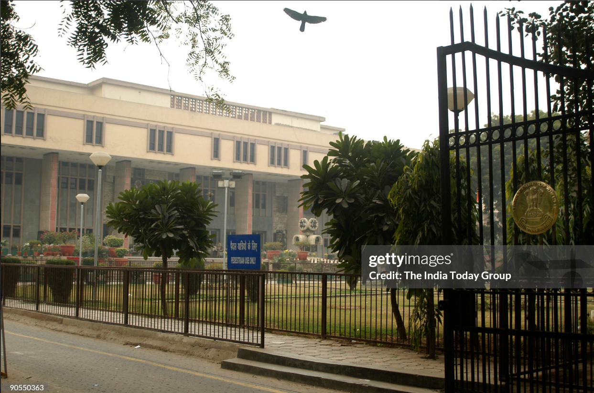

The High Court of Delhi (Hindi: दिल्ली उच्च न्यायालय; IAST: dillī uchcha nyāyālaya) was established on 31 October 1966, through the Delhi High Court Act, 1966, with four judges, Chief Justice K.S. Hegde, Justice I. D. Dua, Justice H.R. Khanna and Justice S.K. Kapur.[1] The High Court of Delhi is the Highest Court performing Judicial Functions in the NCT of Delhi at the State level. Below it are the Subordinate Courts, functioning for 9 Judicial Districts namely (1) Central (2) New Delhi (3) South (4) South-West (5) North (6) North-West (7) West (8) North-East (9) East.[2] The High Court of Delhi is the highest judicial organ in a State. It gets its powers from Chapter V in Part VI of the Constitution of India.[3].High Court of Delhi (Hindi: दिल्ली उच्च न्यायालय; IAST: dillī uchcha nyāyālaya) was established on 31 October 1966, through the Delhi High Court Act, 1966, with four judges, Chief Justice K.S. Hegde, Justice I. D. Dua, Justice H.R. Khanna and Justice S.K. Kapur.[1] The High Court of Delhi is the Highest Court performing Judicial Functions in the NCT of Delhi at the State level. Below it are the Subordinate Courts, functioning for 9 Judicial Districts namely (1) Central (2) New Delhi (3) South (4) South-West (5) North (6) North-West (7) West (8) North-East (9) East.[2] The High Court of Delhi is the highest judicial organ in a State. It gets its powers from Chapter V in Part VI of the Constitution of India.[3].
The "About Us" section for a High Court website is pivotal in conveying the institution's purpose, values, and functions to the public. Here's a draft of such a section 19 Welcome to the official website of [Name of High Court], a bastion of justice, integrity, and the rule of law. As the apex judicial body within [Region/Country], our High Court stands as a pillar of the legal system, dedicated to upholding constitutional principles, safeguarding rights, and ensuring access to justice for all. Established [Year of Establishment], our High Court has a rich legacy of jurisprudence, shaped by esteemed judges, legal scholars, and dedicated staff. We are committed to administering justice impartially, transparently, and expeditiously, guided by the principles of fairness, equity, and integrity. At [Name of High Court], we serve as the final arbiter on matters of constitutional interpretation, civil disputes, criminal appeals, and administrative law. Our jurisdiction extends across [Region/Country], encompassing a diverse array of legal matters that impact the lives of our citizens and uphold the fabric of our society. Through this website, we aim to provide transparent access to information about our court, its history, procedures, judgments, and initiatives. We invite you to explore our resources, engage with our services, and uphold the values of justice, equality, and the rule of law that form the bedrock of our institution. Thank you for visiting [Name of High Court] online, and we look forward to serving you with integrity and dedication.
Justice is a fundamental concept within societies, representing fairness, equity, and impartiality in the treatment of individuals and the resolution of disputes. At its core, justice seeks to uphold and enforce rights, ensure equality, and promote the well-being of all members of a community. It involves the fair distribution of resources, opportunities, and consequences based on ethical principles and legal standards. Justice encompasses various dimensions, including social, economic, and legal aspects, and is essential for maintaining social order, fostering trust in institutions, and promoting harmony among diverse groups. It requires impartial adjudication of conflicts, protection of human rights, and accountability for wrongdoing. Additionally, justice involves addressing systemic inequalities, discrimination, and injustices to create a more just and equitable society. Through the rule of law, due process, and ethical governance, justice strives to ensure that individuals are treated with dignity, respect, and equality before the law, thus contributing to the overall well-being and stability of communities and societies.
The High Court of Delhi (Hindi: दिल्ली उच्च न्यायालय; IAST: dillī uchcha nyāyālaya) was established on 31 October 1966, through the Delhi High Court Act, 1966, with four judges, Chief Justice K.S. Hegde, Justice I. D. Dua, Justice H.R. Khanna and Justice S.K. Kapur.[1] The High Court of Delhi is the Highest Court performing Judicial Functions in the NCT of Delhi at the State level. Below it are the Subordinate Courts, functioning for 9 Judicial Districts namely (1) Central (2) New Delhi (3) South (4) South-West (5) North (6) North-West (7) West (8) North-East (9) East.[2] The High Court of Delhi is the highest judicial organ in a State. It gets its powers from Chapter V in Part VI of the Constitution of India.[3].High Court of Delhi (Hindi: दिल्ली उच्च न्यायालय; IAST: dillī uchcha nyāyālaya) was established on 31 October 1966, through the Delhi High Court Act, 1966, with four judges, Chief Justice K.S. Hegde, Justice I. D. Dua, Justice H.R. Khanna and Justice S.K. Kapur.[1] The High Court of Delhi is the Highest Court performing Judicial Functions in the NCT of Delhi at the State level. Below it are the Subordinate Courts, functioning for 9 Judicial Districts namely (1) Central (2) New Delhi (3) South (4) South-West (5) North (6) North-West (7) West (8) North-East (9) East.[2] The High Court of Delhi is the highest judicial organ in a State. It gets its powers from Chapter V in Part VI of the Constitution of India.[3].